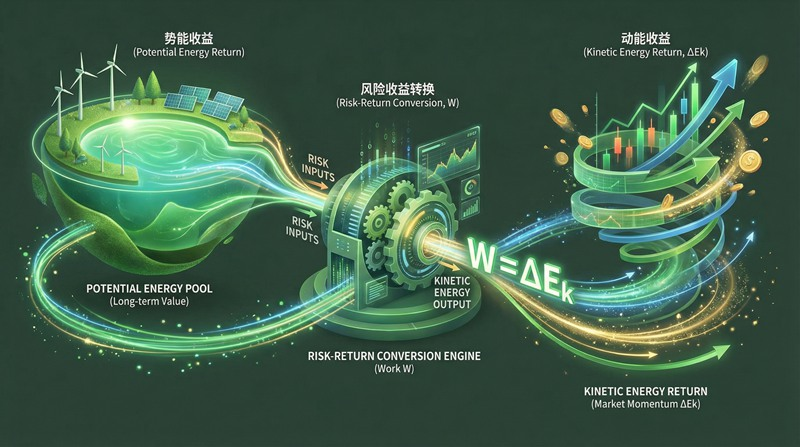
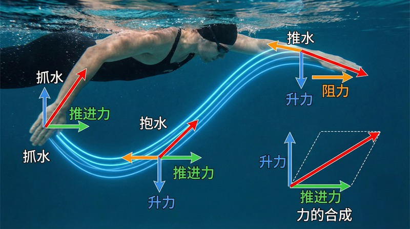

返回课程列表
第五课
能量方法
运动中的能量消耗与转换
⏱️ 约40分钟
体育运动本质上是能量的转换过程。化学能→肌肉动能→运动表现。理解能量转换有助于优化训练效率和比赛策略。
运动中的能量转换
人体将食物中的化学能转化为ATP，再转化为肌肉收缩的机械能。人体的机械效率约为25%，其余75%以热能形式散失。

不同运动的能量消耗
各项运动的能量特征：
- 马拉松：总消耗约2500-3000千卡，平均功率约75W
- 百米短跑：瞬时功率可达2000W以上，但持续时间短
- 游泳：水的阻力大，同距离消耗能量是跑步的4倍
- 跳高：起跳瞬间功率约4000W，将动能转化为势能
势能与动能的互换
跳高运动完美展示了动能与势能的转换：助跑获得动能→起跳将动能转化为势能→越过横杆。理论上，10m/s的助跑速度可跳过5.1米。

跳跃运动的能量分析
跳高中的能量守恒：
- 助跑速度：优秀跳高运动员助跑末速约7-8m/s
- 起跳转换：将水平动能转化为垂直动能，转换效率约60%
- 背越式优势：身体重心可以从横杆下方通过，节省势能需求
- 撑杆跳：杆的弹性势能额外提供能量，可跳过6米以上